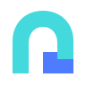
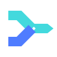
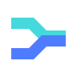
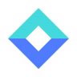
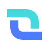
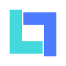

LinkLake
两枚相向的 L 形岸线围出中央通道，直接关联 Link 与 Lake，强调两端之间的稳定连接。
全部候选均采用透明背景、两种纯色和简化几何。每个方案同时展示深色、浅色以及 24px / 16px 小尺寸效果。
两枚相向的 L 形岸线围出中央通道，直接关联 Link 与 Lake，强调两端之间的稳定连接。

厚实拱门代表穿透边界的入口，底部折角隐藏字母 L，适合托盘图标和应用图标。

上下两股数据流汇入统一出口，表达多个本地服务通过 LinkLake 抵达公网。

连接带沿水平方向镜像折转，兼具数据通道、湖面倒影和双向传输的含义。
两段不闭合环流围绕湖心数据包，体现双向数据流与持续可达性。

上下两片几何湖面围出中央核心，轮廓像入口、坐标与数据交换中心。

两条反向通道相互咬合，形成桥梁与隧道的复合轮廓，突出双向转发。

两个相反方向的 L 折叠成开放方框，品牌名称关联最直接，适合单色化。